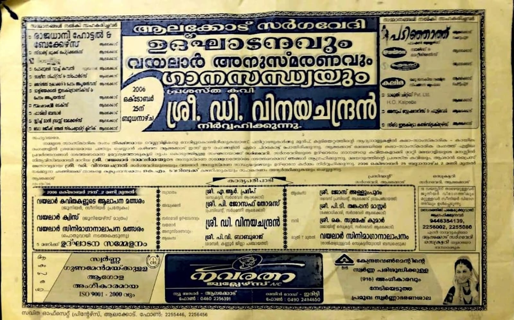
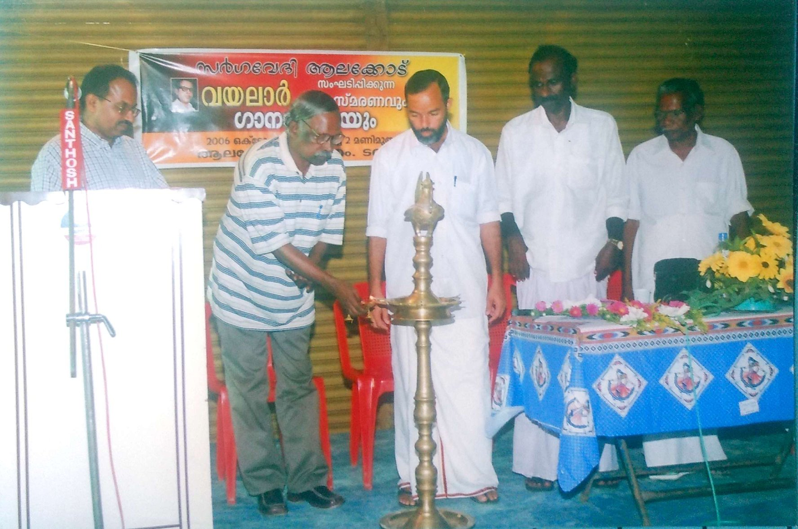
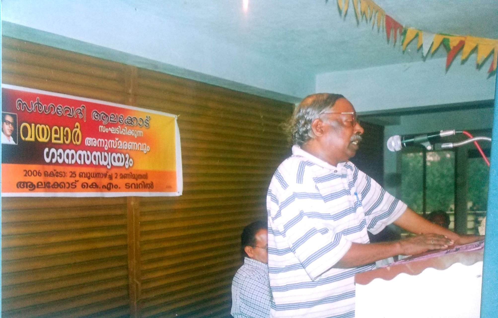
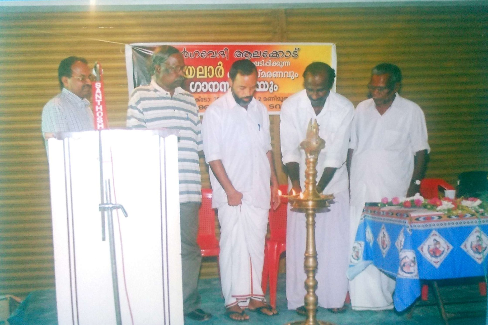
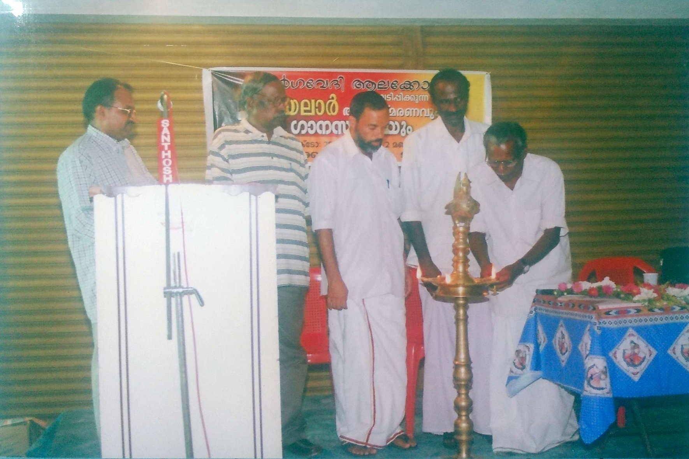
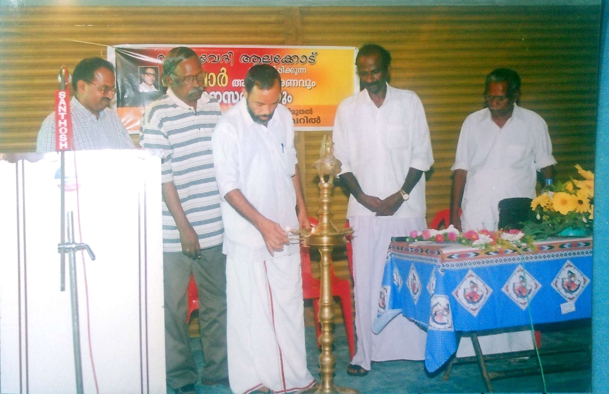
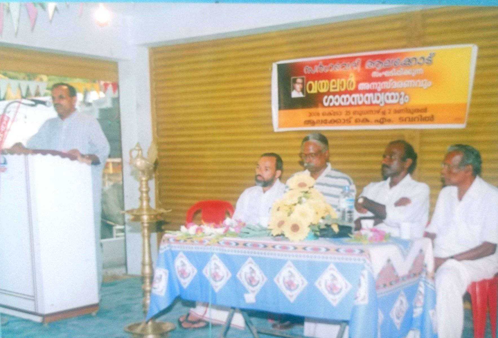
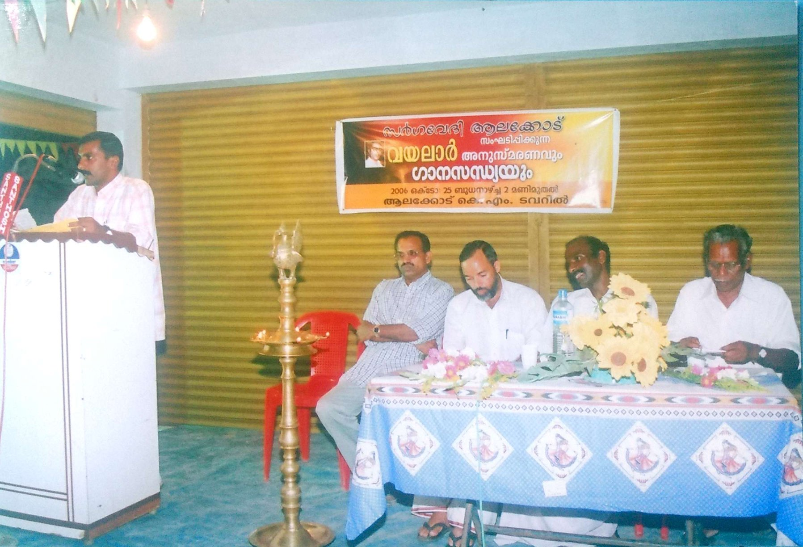
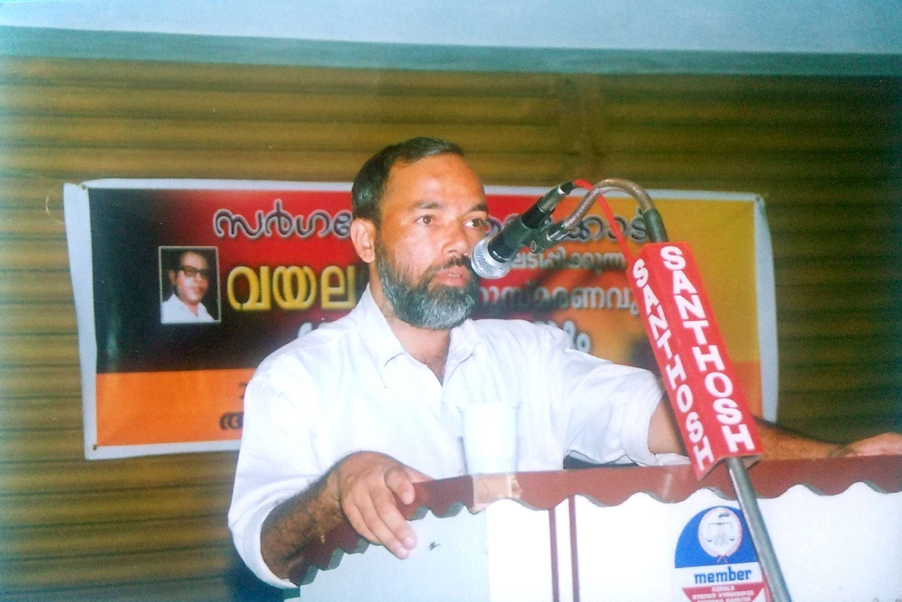
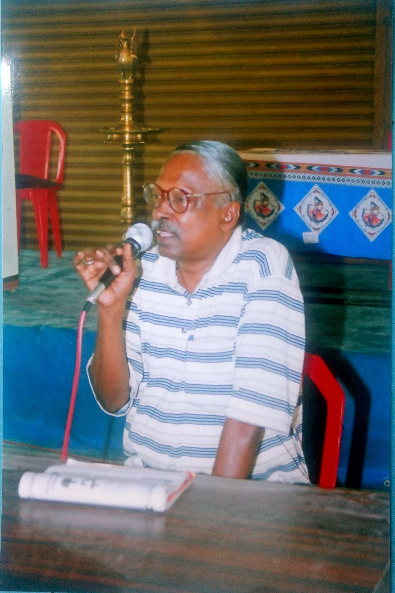
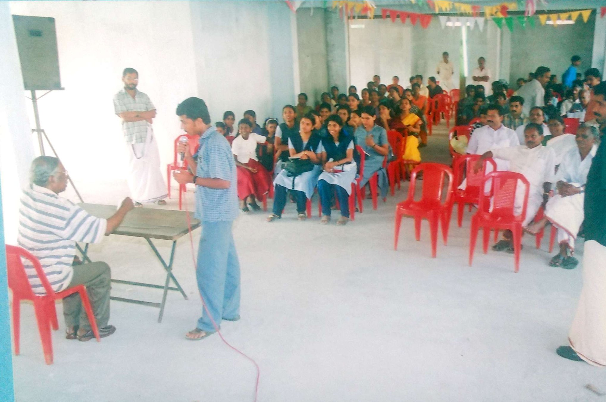
കലാ സാഹിത്യ സാംസ്കാരിക പ്രവർത്തനങ്ങൾക്ക് സമൃദ്ധമായ വിളവുണ്ടാക്കാൻ സാധിക്കുന്ന ഫലഭൂയിഷ്ഠമായ മണ്ണാണ് മലയോരത്തിന്റെത് എന്ന് തെളിയിക്കുന്നതായിരുന്നു സർഗ്ഗവേദിയുടെ പിൽക്കാല പ്രവർത്തനങ്ങൾ. സർഗ്ഗവേദിയുടെ ഒരു വ്യാഴവട്ടക്കാലത്തെ മൗലികവും, സർഗ്ഗാത്മകവുമായ ഇടപെടലുകളിലൂടെ ആലക്കോട് എന്ന മലയോര പട്ടണം കണ്ണൂരിന്റെ സാംസ്കാരിക ഭൂപടത്തിൽ ഇടം നേടിക്കഴിഞ്ഞിരിക്കുന്നു.
മലയാളത്തിന്റെ പ്രശസ്ത എഴുത്തുകാരൻ എൻ പ്രഭാകരൻ മാഷിന്റെ നേത്യത്വത്തിൽ നടന്ന കേരളത്തിലെ ആദ്യത്തെ അനൗപചാരിക സാഹിത്യ പാഠശാല, പങ്കാളിത്തം കൊണ്ട് ശ്രദ്ധേയമായ വീട്ടുമുറ്റ ചർച്ചകൾ, വായനയെ പ്രോത്സാഹിപ്പിക്കുന്നതിനുള്ള ഇടപെടലുകൾ, എഴുത്തുകാരൻ അംബികാസുതൻ മാങ്ങാടിനൊപ്പം സർഗ്ഗവേദി പ്രവർത്തകർ നടത്തിയ എൻമകജെ യാത്ര, എന്നിവ ആലക്കോട് സർഗ്ഗവേദിയുടേയും, അതിന്റെ സഹോദര സംഘടനയായ റീഡേർസ് ഫോറത്തിന്റേയും കൈയ്യൊപ്പ് ചാർത്തിയ സാംസ്കാരിക ഇടപെടലുകളായിരുന്നു.
പുസതക പ്രകാശനങ്ങൾ, പുസ്തക ചർച്ചകൾ, സാംസ്കാരിക യാത്രകൾ, അനുസ്മരണങ്ങൾ തുടങ്ങിയവ മലയോര മേഖലയിൽ ഒരു പുതിയ സാംസ്കാരികാവബോധം ഉണ്ടാക്കിയെടുക്കുന്നതിനുള്ള എളിയ പരിശ്രമങ്ങളാണ്.
എല്ലാ വിഭാഗീയതകൾക്കും അതീതമായി മനുഷ്യരുടെ കൂട്ടായ്മയെ ശക്തിപ്പെടുത്തി ഒരു പൊതു ഇടം രൂപപ്പെടുത്തുന്നതിനാണ് സർഗ്ഗവേദിയും, റീഡേർസ് ഫോറവും അതിന്റെ വൈവിധ്യ പൂർണ്ണമായ പ്രവർത്തനങ്ങളിലൂടെ ശ്രമിച്ചു പോരുന്നത്.
2006 ലാണ് സർഗ്ഗവേദിയുടെ ബീജാവാപം നടന്നത്. അന്തരിച്ച പി.ടി.തങ്കപ്പൻ മാഷിന്റെ നേതൃത്വത്തിൽ ആയിരുന്നു സർഗ്ഗവേദി രൂപീകരണത്തിന്റെ പ്രാഥമിക പ്രവർത്തനങ്ങൾ നടന്നത്. പി.ടി.തങ്കപ്പൻ മാസ്റ്റർ (രക്ഷാധികാരി) പി.ജോസഫ് തോമസ് (പ്രസിഡന്റ്) പി.ജി.രാധാകൃഷ്ണൻ മാസ്റ്റർ (വൈസ് പ്രസിഡന്റ്) എ ആർ പ്രദീപ് (സെക്രട്ടറി) കെ.സുരേഷ് കുമാർ (ജോ.സെക്രട്ടറി) കെ എ ബാബു (ട്രഷറർ) എന്നിവരായിരുന്നു സംഘടനയുടെ പ്രഥമ ഭാരവാഹികൾ.
പ്രശസ്ത കവി ഡി.വിനയചന്ദ്രൻ വയലാർ അനുസ്മരണത്തോടെ സർഗ്ഗവേദിയുടെ ഔപചാരികമായ പ്രവർത്തനോദ്ഘാടനം നടത്തി. തുടർന്ന് വിവിധ വർഷങ്ങളിലായി മലയാളത്തിലെ പ്രമുഖരായ സാഹിത്യ , സാംസ്കാരിക, മാധ്യമ പ്രവർത്തകർ സർഗ്ഗവേദി, റീഡേർസ് ഫോറം പരിപാടികളിൽ പങ്കാളികളായി.
ഒത്തുചേരലും, കൂട്ടായ്മയും ആയിരുന്നു ആദ്യ കാല കുടിയേറ്റ ജനതയുടെ ജീവിത മുദ്രകൾ. പിൽക്കാല കുടിയേറ്റം ഈ വഴിത്താരയിൽ നിന്ന് മാറി നടന്നപ്പോൾ, നമുക്ക് നഷ്ടമായത് തിരിച്ചു പിടിക്കാനുള്ള ശ്രമത്തിലാണ് ആലക്കോട് സർഗ്ഗവേദിയും, റീഡേർസ് ഫോറവും. കലയും, സാഹിത്യവും, സംഗീതവും, സിനിമയും ഒക്കെ ഈ വീണ്ടെടുപ്പിന്റെ ആയുധങ്ങളാണ്.
മലയോരത്ത് പുതിയൊരു സാസ്കാരിക ജീവിതം കരുപ്പിടിപ്പിക്കുവാൻ ഞങ്ങൾ നടത്തുന്ന എളിയ ശ്രമങ്ങർക്ക് എല്ലാവരുടേയും പിന്തുണ വിനീതമായി അഭ്യർത്ഥിക്കുകയാണ്.